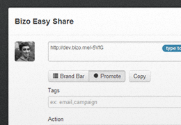

<div class="span9">
<form class="form-horizontal">
  <fieldset>

  <h1 class="section-header">Easy Share</h1>
  <p>Easily create and share SmartLinks with your social followers.</p>
  <hr />

  <h3 class="paragraph-header">Your connected Twitter account</h3>    
  <div class="row-fluid">
    <div class="span3">
      <div class="well well-small">
       <strong><a href="http://twitter.com/jasondwilkens">@jasondwilkens</a></strong>
      </div>
    </div>
    <div class="span9">
      <button class="btn btn-inverse"><i class="icon-remove icon-white"></i> Disconnect</button>
    </div>
  </div>
  <hr />
  
  <h3 class="paragraph-header">Install Easy Share</h3>
  <div class="well">
    <a class="btn btn-success move"><i class="icon-arrow-up icon-white"></i> Bizo Easy Share</a>  
    <p class="help-inline">Drag the button up to your Bookmarks Bar.</p>          
  </div>
  <p>To show the Bookmarks Bar in Chrome, click <strong>Settings > Bookmarks > Show Bookmarks Bar</strong>.</p>
  <hr />
  
  <div class="row-fluid">
    <div class="span2">
      
    </div>
    <div class="span10">
      <h3 class="paragraph-header">How to share SmartLinks</h3>
      <ol>
        <li>Click the Easy Share bookmark while viewing a page you want to share with your social audience.</li>
        <li>Easy Share will create a SmartLink for the page. Add text to create a message for your followers.</li>
        <li>Schedule the share for later or publish immediately.</li>
      </ol>
    </div>
  </div>
  <hr />
  
  <div class="row-fluid">
    <div class="span2">
      
    </div>
    <div class="span10">
      <h3 class="paragraph-header">Using the Brand Bar and Promoting Shares</h3>      
      <p>The Brand Bar displays at the top of the linked page when a SmartLink is clicked. It shows your Twitter identity and one of your Promoted shares. Using the Brand Bar allows you to share third party content with your audience while keeping your brand and content top-of-mind.</p>
      <p>Promoting a share will turn it into an ad that displays in your Brand Bar. The Brand Bar rotates through your promoted shares, displaying one at a time. Promote shares that link to your offers or landing pages to drive conversions.</p>
    </div>
  </div>
  <hr />
  
  <h3 class="paragraph-header">Brand Bar Settings</h3>
  <label class="checkbox"><input type="checkbox" checked>Automatically show the Brand Bar on my SmartLinks, unless linking to one of <a href="tag_your_sites.html">my domains</a>.</label>
  <p><strong>Note:</strong> You can turn the Brand Bar on and off for specific links on the <a href="smartlinks.html">SmartLinks report</a>. Some sites block the Brand Bar from appearing.</p>  

    </fieldset>
  </form>
</div>
